GridDB Features Referemce
Revision: CE-20200130
1 Introduction
1.1 Aim & composition of this manual
This manual explains the functions of GridDB.
The contents of this manual are as follows.
- What is GridDB?
- Describes the features and application examples of GridDB.
- Structure of GridDB
- Describes the cluster operating structure in GridDB.
- The data model of GridDB
- Describes the data model of GridDB.
- Functions provided by GridDB
- Describes the data management functions provided by GridDB.
- Parameter
- Describes the parameters to control the operations in GridDB.
2 What is GridDB?
GridDB is a distributed NoSQL database to manage a group of data (known as a row) that is made up of a key and multiple values. Besides having a composition of an in-memory database that arranges all the data in the memory, it can also adopt a hybrid composition combining the use of a disk (including SSD as well) and a memory. By employing a hybrid composition, it can also be used in small scale, small memory systems.
In addition to the 3 Vs (volume, variety, velocity) required in big data solutions, data reliability/availability is also assured in GridDB. Using the autonomous node monitoring and load balancing functions, labor-saving can also be realized in cluster applications.
2.1 Features of GridDB
2.1.1 Big data (volume)
As the scale of a system expands, the data volume handled increases and thus the system needs to be expanded so as to quickly process the big data.
System expansion can be broadly divided into 2 approaches - scale-up (vertical scalability) and scale-out (horizontal scalability).
What is scale-up (vertical scalability)?
This approach reinforces the system by adding memory to the operating machines, using SSD for the disks, adding processors, and so on. Generally, this approach increases individual processing time and increases the system processing speed. On the other hand, since the nodes must be stopped before the scale-up operation, as it is not a cluster application using multiple machines, once a failure occurs, failure recovery is also time-consuming.
What is scale-out (horizontal scalability)?
This approach increases the number of nodes constituting a system to improve the processing capability. Since multiple nodes are generally set to operate in coordination, this approach features that there is no need to completely stop the service during maintenance or even when a failure occurs. However, the application management time and effort increases as the number of nodes increases. This architecture is suitable for performing highly parallel processing.
In GridDB, in addition to the scale-up approach to increase the number of operating nodes and reinforce the system, new nodes can be added to expand the system with a scale-out approach to incorporate nodes into an operating cluster.
As an in-memory processing database, GridDB can handle a large volume of data with its scale-out model. In GridDB, data is distributed throughout the nodes inside a cluster that is composed of multiple nodes. That is, GridDB provides a large-scale memory database by handling memories of more than one nodes as one big memory space.
Moreover, since GridDB manages data both in memories and on a disk, even when a single node is in operation, it can maintain and access the data larger than its memory size. A large capacity that is not limited by the memory size can also be realized.
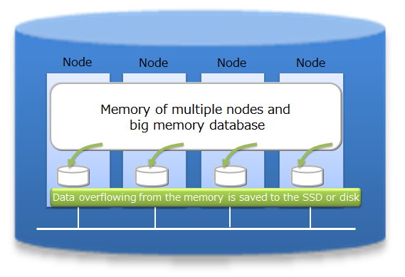
System expansion can be carried out online with a scale-out approach. That is, without stopping the system in operation, the system can be expanded when the volume of data increases.
In the scale-out approach, data is relocated into the new nodes added to the system in accordance with the load of each existing node in the system. As GridDB will optimize the load balance, the application administrator does not need to worry about the data arrangement. Operation is also easy because a structure to automate such operations has been built into the system.
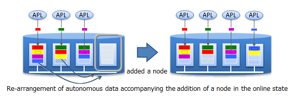
2.1.2 Various data types (variety)
GridDB data adopts a Key-Container data model that is expanded from Key-Value. Data is stored in a device equivalent to a RDB table known as a container. (A container can be considered a RDB table for easier understanding.)
When accessing data in GridDB, the model allows data to be short-listed with a key thanks to its Key-Value database structure, allowing processing to be carried out at the highest speed. A design that prepares a container serving as a key is required to support the entity under management.
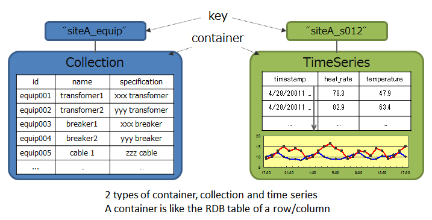
Besides being suitable for handling a large volume of time series data (TimeSeries container) that is generated by a sensor or the like and other values paired with the time of occurrence, space data such as position information, etc. can also be registered and space specific operations (space intersection) can also be carried out in a container. A variety of data can be handled as the system supports non-standard data such as array data, BLOB and other data as well.
A unique compression function and a function to release data that has expired and so on are provided in a TimeSeries container, making it suitable for the management of data which is generated in large volumes.
2.1.3 High-speed processing (velocity)
A variety of architectural features is embedded in GridDB to achieve high-speed processing.
2.1.3.1 Processing is carried out in the memory space as much as possible
In the case of an operating system with an in-memory in which all the data is arranged, there is no real need to be concerned about the access overhead in the disk. However, in order to process a volume of data so large that it cannot be saved in the memory, there is a need to localize the data accessed by the application and to reduce access to the data arranged in the disk as much as possible.
In order to localize data access from an application, GridDB provides a function to arrange related data in the same block as far as possible. Since data in the data block can be consolidated according to the hints provided in the data, the memory hit rate is raised during data access, thereby increasing the processing speed for data access. By setting hints for memory consolidation according to the access frequency and access pattern in the application, limited memory space can be used effectively for operation (Affinity function).
2.1.3.2 Reduces the overhead
In order to minimize waiting time caused by locks or latches in a simultaneous access to the database, GridDB allocates exclusive memory and DB files to each CPU core and thread, so as to eliminate waiting time for exclusive and synchronization processing.
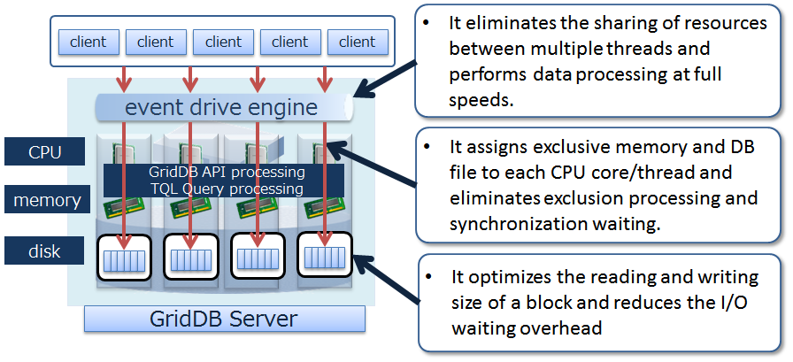
In addition, direct access between the client and node is possible in GridDB by caching the data arrangement when accessing the database for the first time on the client library end. Since direct access to the target data is possible without going through the master node to manage the operating status of the cluster and data arrangement, access to the master node can be centralized to reduce communication cost substantially.
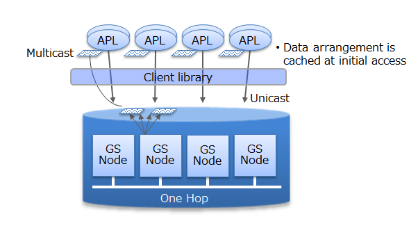
2.1.3.3 Processing in parallel
GridDB provides high-speed processing using the following functions: parallel processing e.g. by dividing a request into processing units capable of parallel processing in the drive engine and executing the process using a thread in the node and between nodes, as well as dispersing a single large data into multiple nodes (partitioning) for processing to be carried out in parallel between nodes.
2.1.4 Reliability/availability
Data are duplicated in a cluster and the duplicated data, replicas, are located in multiple nodes. Replicas include master data, called an owner replica, and duplicated data called a backup. By using these replicas, processing can be continued in any of the nodes constituting a cluster even when a failure occurs. Special operating procedures are not necessary as the system will also automatically perform re-arrangement of the data after a node failure occurs (autonomous data arrangement). Data arranged in a failed node is restored from a replica and then the data is re-arranged so that the set number of replicas is reached automatically.
Duplex, triplex or multiplex replica can be set according to the availability requirements.
Each node performs persistence of the data update information using a disk. Even if a failure occurs in the cluster system, all the registered and updated data up to the failure can be restored without being lost.
In addition, since the client also possesses cache information on the data arrangement and management, upon detecting a node failure, it will automatically perform a failover and data access can be continued using a replica.
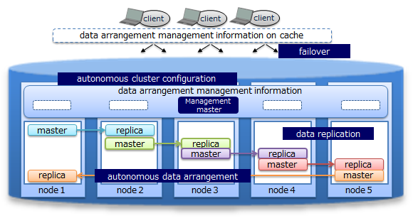
3 Terminology
Describes the terms used in GridDB in a list.
| Term | Description |
|---|---|
| Node | Refers to the individual server process to perform data management in GridDB. |
| Cluster | Single or a set of nodes that perform data management together in an integrated manner. |
| Master node | Node to perform a cluster management process. |
| Follower node | All other nodes in the cluster other than the master node. |
| number of nodes constituting a cluster | Refers to the number of nodes constituting a GridDB cluster. When starting GridDB for the first time, the number is used as a threshold value for the cluster to be valid. (Cluster service is started when the number of nodes constituting a cluster joins the cluster.) |
| number of nodes already participating in a cluster | Number of nodes currently in operation that have been incorporated into the cluster among the nodes constituting the GridDB cluster. |
| Block | A block is a data unit for data persistence processing in a disk (hereinafter referred to a checkpoint) and is the smallest physical data management unit in GridDB. Multiple container data are arranged in a block. Block size is set up in a definition file (cluster definition file) before the initial startup of GridDB. |
| Partitioned table | Data management unit to arrange a container. Smallest data arrangement unit among clusters, and data movement and replication unit for adjusting the load balance between nodes (rebalancing) and for managing data replicas in case of failure. |
| Partition group | A group summarizing multiple partitions which is equivalent to the data file in the file system when the data is perpetuated in a disk. 1 checkpoint file corresponds to 1 partition group. Partition groups are created according to the number of concurrency (/dataStore/concurrency) in the node definition file. |
| Row | Refers to one row of data registered in a container or table. Multiple rows are registered in a container or table. A row consists of values of columns corresponding to the schema definition of the container (table). |
| Container (Table) | Container to manage a set of rows. It may be called a container when operated with NoSQL I/F, and may be called a table when operated with NewSQL I/F. What these names refer are the same object, only in different names. A container has two data types: collection and timeseries container. |
| Collection (table) | One type of container (table) to manage rows having a general key. |
| Timeseries container (timeseries table) | One type of container (table) to manage rows having a timeseries key. Possesses a special function to handle timeseries data. |
| Database file | A database file is a file group consisting of transaction log file and checkpoint file that are perpetuated to a HDD or SSD. Transaction log file is updated every time the GridDB database is updated or a transaction occurs, whereas the checkpoint file is written at a specified time interval. |
| Checkpoint file | A file written into a disk by a partition group. Updated information is reflected in the memory by a cycle of the node definition file (/checkpoint/checkpointInterval). |
| Transaction log file | Update information of the transaction is saved sequentially as a log. |
| LSN (Log Sequence Number) | Shows the update log sequence number, which is assigned to each partition during the update in a transaction. The master node of a cluster configuration maintains the maximum number of LSN (MAXLSN) of all the partitions maintained by each node. |
| Replica | Replication is the process of creating an exact copy of the original data. In this case, one or more replica are created and stored on multiple nodes, which results to the creation of partition across the nodes. There are 2 forms of replica, master and backup. The former one refers to the original or master data, whereas the latter one is used in case of failure as a reference. |
| Owner node | A node that can update a container in a partition. A node that records the container serving as a master among the replicated containers. |
| Backup node | A node that records the container for backup data among the replicated containers. |
| Definition file | Definition file includes two types of parameter files: gs_cluster.json, hereinafter referred to as a cluster definition file, used when composing a cluster; gs_node.json, hereinafter referred to as a node definition file, used to set the operations and resources of the node in a cluster. It also includes a user definition file. |
| Event log file | Event logs of the GridDB server are saved in this file including messages such as errors, warnings and so on. |
| User definition file | File in which an user is registered. During initial installation, admin is registered. |
| Cluster database | General term for all databases that can be accessed in a GridDB cluster system. |
| Database | Theoretical data management unit created in a cluster database. A public database is created in a cluster database by default. |
| Failover | When a failure occurs in a cluster currently in operation, the structure allows the backup node to automatically take over the function and continue with the processing. |
| Client failover | When a failure occurs in a cluster currently in operation, the structure allows the backup node to be automatically re-connected to continue with the processing as a retry process when a failure occurs in the API on the client side. |
| Data Affinity | A function to raise the memory hit rate by placing highly correlated data in a container in the same block and localizing data access. |
| Placement of container/table based on node affinity | A function to reduce the network load during data access by placing highly correlated containers in the same node. |
4 Structure of GridDB
Describes the data model and cluster operating structure in GridDB.
4.1 Composition of a cluster
GridDB is operated by clusters which are composed of multiple nodes. Before accessing the database from an application system, nodes must be started and the cluster must be constituted, that is, cluster service is executed.
A cluster is formed and cluster service is started when a number of nodes specified by the user joins the cluster. Cluster service will not be started and access from the application will not be possible until all nodes constituting a cluster have joined the cluster.
A cluster needs to be constituted even when operating GridDB with a single node. In this case, the number of nodes constituting a cluster is
- A composition that operates a single node is known as a single composition.
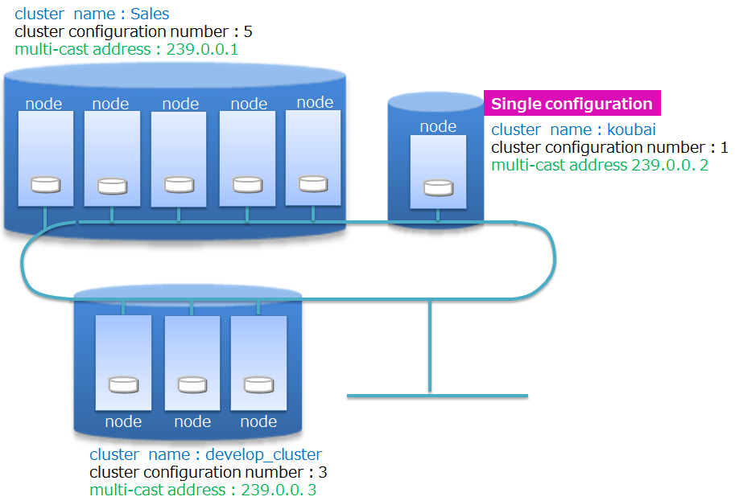
A cluster name is used to distinguish a cluster from other clusters so as to compose a cluster using the right nodes selected from multiple GridDB nodes on a network. Using cluster names, multiple GridDB clusters can be composed in the same network. A cluster is composed of nodes with the following features in common: cluster name, the number of nodes constituting a cluster, and the connection method setting. A cluster name needs to be set in the cluster definition file for each node constituting a cluster, and needs to be specified as a parameter when composing a cluster as well.
The method of constituting a cluster using multicast is called multicast method. See Cluster configuration methods for details.
The operation of a cluster composition is shown below.

To start up a node and compose a cluster, the operation commands gs_startnode/gs_joincluster are used. In addition, there is a service control function to start up the nodes at the same time as the OS and to compose the cluster.
To compose a cluster, the number of nodes joining a cluster (number of nodes constituting a cluster) and the cluster name must be the same for all the nodes joining the cluster.
Even if a node fails and is separated from the cluster after operation in the cluster started, cluster service will continue so long as the majority of the number of nodes is joining the cluster.
Since cluster operation will continue as long as the majority of the number of nodes is in operation. So, a node can be separated from the cluster for maintenance while keeping the cluster in operation. The node can be get back into the cluster via network after the maintenance. Nodes can also be added via network to reinforce the system.
The following two networks can be separated: the network that communicates within the cluster and the network dedicated to client communication.
4.1.1 Status of node
Nodes have several types of status that represent their status. The status changes by user command execution or internal processing of the node. The status of a cluster is determined by the status of the nodes in a cluster.
This section explains types of node status, status transition, and how to check the node status.
Types of node status
Node status Description STOP The GridDB server has not been started in the node. STARTING The GridDB server is starting in the node. Depending on the previous operating state, start-up processes such as recovery processing of the database are carried out. The only possible access from a client is checking the status of the system with a gs_stat command. Access from the application is not possible. STARTED The GridDB server has been started in the node. However, access from the application is not possible as the node has not joined the cluster. To obtain the cluster composition, execute a cluster operating command, such as gs_joincluster to join the node to the cluster. WAIT The system is waiting for the cluster to be composed. Nodes have been informed to join a cluster but the number of nodes constituting a cluster is insufficient, so the system is waiting for the number of nodes constituting a cluster to be reached. WAIT status also indicates the node status when the number of nodes constituting a cluster drops below the majority and the cluster service is stopped. SERVICING A cluster has been constituted and access from the application is possible. However, access may be delayed if synchronization between the clusters of the partition occurs due to a re-start after a failure when the node is stopped or the like. STOPPING Intermediate state in which a node has been instructed to stop but has not stopped yet. ABNORMAL The state in which an error is detected by the node in SERVICING state or during state transition. A node in the ABNORMAL state will be automatically separated from the cluster. After collecting system operation information, it is necessary to forcibly stop and restart the node in the ABNORMAL state. By re-starting the system, recovery processing will be automatically carried out. Transition in the node status

State transition State transition event Description ① Command execution Start a node by executing the commands such as gs_startnode command. ② System Status changes automatically at the end of recovery processing or loading of database files. ③ Command execution Joining a node to a cluster by executing the commands such as gs_joincluster/gs_appendcluster command. ④ System Status changes automatically when the required number of component nodes join a cluster. ⑤ System Status changes automatically when some nodes consisting the cluster are detached from the service due to a failure or by some other reasons, and the number of nodes joining the cluster become less than half of the value set in the definition file. ⑥ Command execution Detaches a node from a cluster by executing the commands such as gs_leavecluster command. ⑦ Command execution Detaches a node from a cluster by executing the commands such as gs_leavecluster/gs_stopcluster command. ⑧ Command execution Stop a node by executing the commands such as gs_stopnode command. ⑨ System Stops the server process once the final processing ends ⑩ System Detached state due to a system failure. In this state, the node needs to be stopped by force once. How to check the node status
The node status is determined by the combination of the node status and the node role.
The operation status of a node and the role of a node can be checked from the result of the gs_stat command, which is in json format. That is, for the operation status of a node, check the value of /cluster/nodeStatus, for the role of a node, check /cluster/clusterStatus)
The table below shows the node status, determined by the combination of the operation status of a node and the role of a node.
Node status Operation status of a node
(/cluster/nodeStatus)Role of a node
(/cluster/clusterStatus)STOP - (Connection error of gs_stat) - (Connection error of gs_stat) STARTING INACTIVE SUB_CLUSTER STARTED INACTIVE SUB_CLUSTER WAIT ACTIVE SUB_CLUSTER SERVICING ACTIVE MASTER or FOLLOWER STOPPING NORMAL_SHUTDOWN SUB_CLUSTER ABNORMAL ABNORMAL SUB_CLUSTER Operation status of a node
The table below shows the operation status of a node. Each state is expressed as the value of /cluster/nodeStatus of the gs_stat command.
Operation status of a node Description ACTIVE Active state ACTIVATING In transition to an active state INACTIVE Non-active state DEACTIVATING In transition to a non-active state. NORMAL_SHUTDOWN Under shutdown process ABNORMAL Abnormal state Role of a node
The table below shows the role of a node. Each state is expressed as the value of /cluster/clusterStatus of the gs_stat command.
A node has two types of roles: "master" and "follower". To start a cluster, one of the nodes which constitute the cluster needs to be a "master." The master manages the whole cluster. All the nodes other than the master become "followers." A follower performs cluster processes, such as a synchronization, following the directions from the master.
Role of a node Description MASTER Master FOLLOWER Follower SUB_CLUSTER/SUB_MASTER Role undefined
4.1.2 Status of cluster
The cluster operating status is determined by the state of each node, and the status may be one of 3 states - IN OPERATION/INTERRUPTED/STOPPED.
During the initial system construction, cluster service starts after all the nodes, the number of which was specified by the user as the number of nodes constituting a cluster, have joined the cluster.
During initial cluster construction, the state in which the cluster is waiting to be composed when all the nodes that make up the cluster have not been incorporated into the cluster is known as [INIT_WAIT]. When the number of nodes constituting a cluster has joined the cluster, the state will automatically change to the operating state.
Operation status includes two states, [STABLE] and [UNSTABLE].
- [STABLE] state
- State in which a cluster has been formed by the number of nodes specified in the number of nodes constituting a cluster and service can be provided in a stable manner.
- [UNSTABLE] state
- A cluster in this state is joined by the nodes less than "the number of the nodes constituting the cluster" but more than half the constituting clusters are in operation.
- Cluster service will continue for as long as a majority of the number of nodes constituting a cluster is in operation.
A cluster can be operated in an [UNSTABLE] state as long as a majority of the nodes are in operation even if some nodes are detached from a cluster due to maintenance and for other reasons.
Cluster service is interrupted automatically in order to avoid a split brain when the number of nodes constituting a cluster is less than half the number of nodes constituting a cluster. The status of the cluster will become [WAIT].
What is split brain?
A split brain is an action where multiple cluster systems performing the same process provide simultaneous service when a system is divided due to a hardware or network failure in a tightly-coupled system that works like a single server interconnecting multiple nodes. If the operation is continued in this state, data saved as replicas in multiple clusters will be treated as master data, causing data inconsistency.
To resume the cluster service from a [WAIT] state, add the node, which recovered from the abnormal state, or add a new node, by using a node addition operation. After the cluster is joined by all the nodes, the number of which is the same as the one specified in "the number of nodes constituting a cluster", the status will be [STABLE], and the service will be resumed.
Even when the cluster service is disrupted, since the number of nodes constituting a cluster becomes less than half due to failures in the nodes constituting the cluster, the cluster service will be automatically restarted once a majority of the nodes joine the cluster by adding new nodes and/or the nodes restored from the errors to the cluster.
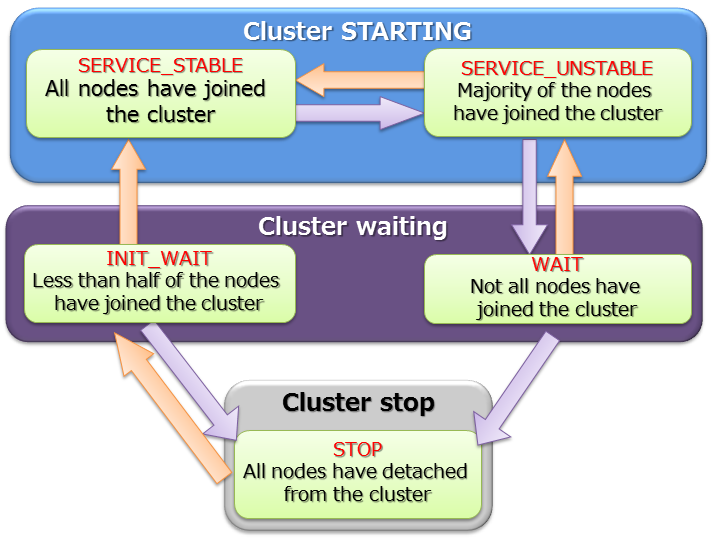
A STABLE state is a state in which the value of the json parameter shown in gs_stat, /cluster/activeCount, is equal to the value of /cluster/designatedCount.
$ gs_stat -u admin/admin
{
"checkpoint": {
"archiveLog": 0,
：
：
},
"cluster": {
"activeCount":4, // Nodes in operation within the cluster
"clusterName": "test-cluster",
"clusterStatus": "MASTER",
"designatedCount": 4, // Number of nodes constituting a cluster
"loadBalancer": "ACTIVE",
"master": {
"address": "192.168.0.1",
"port": 10040
},
"nodeList": [ // Node list constituting a cluster
{
"address": "192.168.0.1",
"port": 10040
},
{
"address": "192.168.0.2",
"port": 10040
},
{
"address": "192.168.0.3",
"port": 10040
},
{
"address": "192.168.0.4",
"port": 10040
},
],
：
：
4.1.3 Status of partition
The partition status represents the status of the entire partition in a cluster, showing whether the partitions in an operating cluster are accessible, or the partitions are balanced.
| Partition status | Description |
|---|---|
| NORMAL | All the partitions are in normal states where all of them are placed as planned. |
| NOT_BALANCE | With no replica_loss, no owner_loss but partition placement is unbalanced. |
| REPLICA_LOSS | Replica data is missing in some partitions. (Availability of the partition is reduced, that is, the node cannot be detached from the cluster.) |
| OWNER_LOSS | Owner data is missing in some partitions. (The data of the partition are not accessible.) |
| INITIAL | The initial state no partition has joined the cluster |
Partition status can be checked by executing gs_stat command to a master node. (The state is expressed as the value of /cluster/partitionStatus)
$ gs_stat -u admin/admin
{
：
：
"cluster": {
：
"nodeStatus": "ACTIVE",
"notificationMode": "MULTICAST",
"partitionStatus": "NORMAL",
：
[Notes]
- The value of /cluster/partitionStatus of the nodes other than a master node may not be correct. Be sure to check the value of a master node.
4.2 Cluster configuration methods
A cluster consists of one or more nodes connected in a network. Each node maintains a list of the other nodes' addresses for communication purposes.
GridDB supports 3 cluster configuration methods for configuring the address list. Different cluster configuration methods can be used depending on the environment or use case. Connection method of client or operational tool may also be different depending on the configuration methods.
Three cluster configuration methods are available: Multicast method, Fixed list method and Provider method. Multicast method is recommended.
Fixed list or provider method can be used in the environment where multicast is not supported.
- Multicast method
- This method performs node discovery in multi-cast to automatically configure the address list.
- Fixed list method
- A fixed address list is saved in the cluster definition file.
- Provider method
- Provider method
- The address provider can be configured as a Web service or as a static content.
The table below compares the three cluster configuration methods.
| Property | Multicast method (recommended) | Fixed list method | Provider method |
|---|---|---|---|
| Parameters | - Multicast address and port | - List of IP address and port of all the node | - URL of the address provider |
| Use case | - When multicast is supported | - When multicast is not supported - System scale estimation can be performed accurately |
- When multicast is not supported - System scale estimation can not be performed |
| Cluster operation | - Perform automatic discovery of nodes at a specified time interval | - Set a common address list for all nodes - Read that list only once at node startup |
- Obtain the address list at a specified time interval from address provider |
| Pros. | - No need to restart the cluster when adding nodes | - No mistake of configuration by consistency check of the list | - No need to restart the cluster when adding nodes |
| Cons. | - Multicast is required for client connection | - Need to restart cluster when adding nodes - Need to update the connection setting of the client |
- Need to ensure the availability of the address provider |
4.2.1 Setting up cluster configuration files
Fixed list method or provider method can be used in the environment where multicast is not supported. Network setting of fixed list method and provider method is as follows.
4.2.1.1 FIXED_LIST: fixed list method
When a fixed address list is given to start a node, the list is used to compose the cluster.
When composing a cluster using the fixed list method, configure the parameters in the cluster definition file.
cluster definition file
| Property | JSON Data type | Description |
|---|---|---|
| /cluster/notificationMember | string | Specify the address list when using the fixed list method as the cluster configuration method. |
A configuration example of a cluster definition file is shown below.
{
:
:
"cluster":{
"clusterName":"yourClusterName",
"replicationNum":2,
"heartbeatInterval":"5s",
"loadbalanceCheckInterval":"180s",
"notificationMember": [
{
"cluster": {"address":"172.17.0.44", "port":10010},
"sync": {"address":"172.17.0.44", "port":10020},
"system": {"address":"172.17.0.44", "port":10040},
"transaction": {"address":"172.17.0.44", "port":10001},
"sql": {"address":"172.17.0.44", "port":20001}
},
{
"cluster": {"address":"172.17.0.45", "port":10010},
"sync": {"address":"172.17.0.45", "port":10020},
"system": {"address":"172.17.0.45", "port":10040},
"transaction": {"address":"172.17.0.45", "port":10001},
"sql": {"address":"172.17.0.45", "port":20001}
},
{
"cluster": {"address":"172.17.0.46", "port":10010},
"sync": {"address":"172.17.0.46", "port":10020},
"system": {"address":"172.17.0.46", "port":10040},
"transaction": {"address":"172.17.0.46", "port":10001},
"sql": {"address":"172.17.0.46", "port":20001}
}
]
},
:
:
}
4.2.1.2 PROVIDER: provider method
Get the address list supplied by the address provider to perform cluster configuration.
When composing a cluster using the provider method, configure the parameters in the cluster definition file.
cluster definition file
| Property | JSON Data type | Description |
|---|---|---|
| /cluster/notificationProvider/url | string | Specify the URL of the address provider when using the provider method as the cluster configuration method. |
| /cluster/notificationProvider/updateInterval | string | Specify the interval to get the list from the address provider. Specify the value more than 1 second and less than 231 seconds. |
A configuration example of a cluster definition file is shown below.
{
:
:
"cluster":{
"clusterName":"yourClusterName",
"replicationNum":2,
"heartbeatInterval":"5s",
"loadbalanceCheckInterval":"180s",
"notificationProvider":{
"url":"http://example.com/notification/provider",
"updateInterval":"30s"
}
},
:
:
}
The address provider can be configured as a Web service or as a static content. The address provider needs to provide the following specifications.
- Compatible with the GET method.
- When accessing the URL, the node address list of the cluster containing the cluster definition file in which the URL is written is returned as a response.
- Response body: Same JSON as the contents of the node list specified in the fixed list method
- Response header: Including Content-Type:application/json
An example of a response sent from the address provider is as follows.
$ curl http://example.com/notification/provider
[
{
"cluster": {"address":"172.17.0.44", "port":10010},
"sync": {"address":"172.17.0.44", "port":10020},
"system": {"address":"172.17.0.44", "port":10040},
"transaction": {"address":"172.17.0.44", "port":10001},
"sql": {"address":"172.17.0.44", "port":20001}
},
{
"cluster": {"address":"172.17.0.45", "port":10010},
"sync": {"address":"172.17.0.45", "port":10020},
"system": {"address":"172.17.0.45", "port":10040},
"transaction": {"address":"172.17.0.45", "port":10001},
"sql": {"address":"172.17.0.45", "port":20001}
},
{
"cluster": {"address":"172.17.0.46", "port":10010},
"sync": {"address":"172.17.0.46", "port":10020},
"system": {"address":"172.17.0.46", "port":10040},
"transaction": {"address":"172.17.0.46", "port":10001},
"sql": {"address":"172.17.0.46", "port":20001}
}
]
[Note]
- Specify the serviceAddress and servicePort of the node definition file in each module (cluster,sync etc.) for each address and port.
- Module sql is needed only in GridDB Advanced Edition.
- Set either the /cluster/notificationAddress, /cluster/notificationMember, /cluster/notificationProvider in the cluster definition file to match the cluster configuration method used.
5 Data model
GridDB is a unique Key-Container data model that resembles Key-Value. It has the following features.
- A concept resembling a RDB table that is a container for grouping Key-Value has been introduced.
- A schema to define the data type for the container can be set. An index can be set in a column.
- Transactions can be carried out on a row basis within the container. In addition, ACID is guaranteed on a container basis.
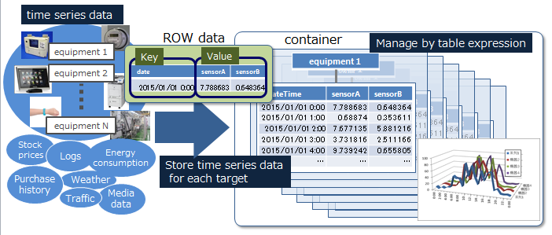
GridDB manages data on a block, container, table, row, partition, and partition group basis.
Block
A block is a data unit for data persistence processing in a disk (hereinafter referred to a checkpoint) and is the smallest physical data management unit in GridDB. Multiple container data are arranged in a block. Block size is set up in a definition file (cluster definition file) before the initial startup of GridDB.
As a database file is created during initial startup of the system, the block size cannot be changed after initial startup of GridDB.
Container (Table)
A container is a data structure that serves as an interface with the user. A container consists of multiple blocks. Data structure serving as an I/F with the user. Container to manage a set of rows. 2 data types exist, collection (table) and timeseries container (timeseries table).
Before registering data in an application, there is a need to make sure that a container (table) is created beforehand. Data is registered in a container (table).
Row
A row refers to a row of data to be registered in a container or table. Multiple rows can be registered in a container or table but this does not mean that data is arranged in the same block. Depending on the registration and update timing, data is arranged in suitable blocks within partitions.
A row includes columns of more than one data type.
Partitioned table
A partition is a data management unit that includes 1 or more containers or tables.
A partition is a data arrangement unit between clusters for managing the data movement to adjust the load balance between nodes and data multiplexing (replica) in case of a failure. Data replica is arranged in a node to compose a cluster on a partition basis.
A node that can update a container in a partition is called an owner node and one owner node is allocated to one partition. A node that maintains replicas other than owner nodes is a backup node. Master data and multiple backup data exist in a partition, depending on the number of replicas set.
The relationship between a container and a partition is persistent and the partition which has a specific container is not changed. The relationship between a partition and a node is temporary and the autonomous data placement may cause partition migration to another node.
Partition group
A group of multiple partitions is known as a partition group.
Data maintained by a partition group is saved in an OS disk as a physical database file. A partition group is created with a number that depends on the degree of parallelism of the database processing threads executed by the node.
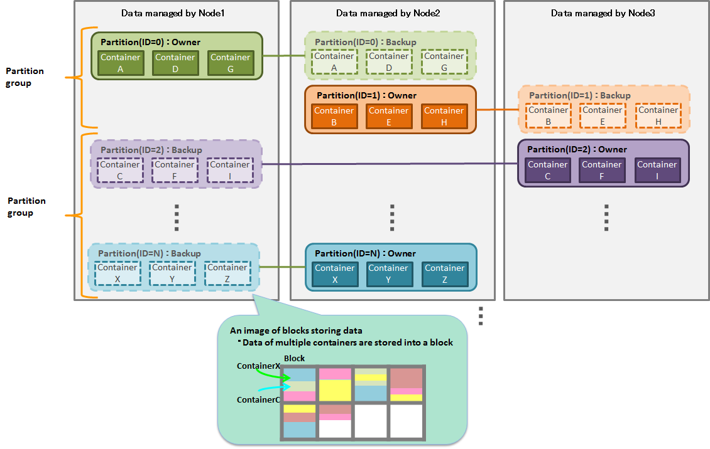
5.1 Container
To register and search for data in GridDB, a container (table) needs to be created to store the data. Data structure serving as an I/F with the user. Container to manage a set of rows.
The naming rules for containers (tables) are the same as those for databases.
- A string consisting of alphanumeric characters, the underscore mark, the hyphen mark, the dot mark, the slash mark and the equal mark can be specified. The container name should not start with a number.
- Although the name is case sensitive, a container (table) cannot be created if it has the same name as an existing container when they are case insensitive.
5.1.1 Type
There are 2 container (table) data types. A timeseries container (timeseries table) is a data type which is suitable for managing hourly data together with the occurrence time while a collection (table) is suitable for managing a variety of data.
5.1.2 Data type
The schema can be set in a container (table). The basic data types that can be registered in a container (table) are the basic data type and array data type .
5.1.2.1 Basic data types
Describes the basic data types that can be registered in a container (table). A basic data type cannot be expressed by a combination of other data types.
| JSON Data type | Description |
|---|---|
| BOOL | True or false |
| STRING | Composed of an arbitrary number of characters using the unicode code point |
| BYTE | Integer value from -27to 27-1 (8bits) |
| SHORT | Integer value from -215to 215-1 (16bits) |
| INTEGER | Integer value from -231to 231-1 (32bits) |
| LONG | Integer value from -263to 263-1 (64bits) |
| FLOAT | Single precision (32 bits) floating point number defined in IEEE754 |
| DOUBLE | Double precision (64 bits) floating point number defined in IEEE754 |
| TIMESTAMP | Data type expressing the date and time Data format maintained in the database is UTC, and accuracy is in milliseconds |
| GEOMETRY | Data type to represent a space structure |
| BLOB | Data type for binary data such as images, audio, etc. |
The following restrictions apply to the size of the data that can be managed for STRING, GEOMETRY and BLOB data. The restriction value varies according to the block size which is the input/output unit of the database in the GridDB definition file (gs_node.json).
| Data type | Block size (64KB) | Block size (1MB～32MB) |
|---|---|---|
| STRING | Maximum 31KB (equivalent to UTF-8 encode) | Maximum 128KB (equivalent to UTF-8 encode) |
| GEOMETRY | Maximum 31KB (equivalent to the internal storage format) | Maximum 128KB (equivalent to the internal storage format) |
| BLOB | Maximum 1GB - 1Byte | Maximum 1GB - 1Byte |
GEOMETRY-type (Spatial-type)
GEOMETRY-type (Spatial-type) data is often used in map information system and available only for a NoSQL interface, not supported by a NewSQL interface.
GEOMETRY type data is described using WKT (Well-known text). WKT is formulated by the Open Geospatial Consortium (OGC), a nonprofit organization promoting standardization of information on geospatial information. In GridDB, the spatial information described by WKT can be stored in a column by setting the column of a container as a GEOMETRY type.
GEOMETRY type supports the following WKT forms.
- POINT
- Point represented by two or three-dimensional coordinate.
- Example) POINT(0 10 10)
- LINESTRING
- Set of straight lines in two or three-dimensional space represented by two or more points.
- Example) LINESTRING(0 10 10, 10 10 10, 10 10 0)
- POLYGON
- Closed area in two or three-dimensional space represented by a set of straight lines. Specify the corners of a POLYGON counterclockwise. When building an island in a POLYGON, specify internal points clockwise.
- Example) POLYGON((0 0,10 0,10 10,0 10,0 0)), POLYGON((35 10, 45 45, 15 40, 10 20, 35 10),(20 30, 35 35, 30 20, 20 30))
- POLYHEDRALSURFACE
- Area in the three-dimensional space represented by a set of the specified area.
- Example) POLYHEDRALSURFACE(((0 0 0, 0 1 0, 1 1 0, 1 0 0, 0 0 0)), ((0 0 0, 0 1 0, 0 1 1, 0 0 1, 0 0 0)), ((0 0 0, 1 0 0, 1 0 1, 0 0 1, 0 0 0)), ((1 1 1, 1 0 1, 0 0 1, 0 1 1, 1 1 1)), ((1 1 1, 1 0 1, 1 0 0, 1 1 0, 1 1 1)), ((1 1 1, 1 1 0, 0 1 0, 0 1 1, 1 1 1)))
- QUADRATICSURFACE
- Two-dimensional curved surface in a three-dimensional space represented by defining equation f(X) = <AX, X> + BX + c.
The space structure written by QUADRATICSURFACE cannot be stored in a container, only can be specified as a search condition.
Operations using GEOMETRY can be executed with API or TQL.
With TQL, management of two or three-dimensional spatial structure is possible. Generating and judgement function are also provided.
SELECT * WHERE ST_MBRIntersects(geom, ST_GeomFromText('POLYGON((0 0,10 0,10 10,0 10,0 0))'))
5.1.2.2 Hybrid types
A data type composed of a combination of basic data types that can be registered in a container. The only hybrid data type in the current version is an array.
Array
Expresses an array of values. Among the basic data types, only GEOMETRY and BLOB data cannot be maintained as an array. The restriction on the data volume that can be maintained in an array varies according to the block size of the database.
Data type Block size (64KB) Block size (1MB～32MB) Number of arrays 4000 65000
[Note]
The following restrictions apply to TQL operations in an array column.
Although the i-th value in the array column can be compared, calculations (aggregation) cannot be performed on all the elements.
(Example) When columnA was defined as an array
The elements in an array such as select * where ELEMENT (0, column A) > 0 can be specified and compared. However, a variable cannot be specified instead of "0" in the ELEMENT.
Aggregation such as select SUM (column A) cannot be carried out.
5.1.3 Primary key
A ROWKEY is the data set in the row of a container. The uniqueness of a row with a set ROWKEY is guaranteed. NULL is not allowed in the column ROWKEY is set.
In NewSQL I/F, ROWKEY is called as PRIMARY KEY.
- For a timeseries container (timeseries table)
- A ROWKEY can be set in the first column of the row. (This is set in Column No. 0 since columns start from 0 in GridDB.)
- ROWKEY (PRIMARY KEY) is a TIMESTAMP
- Must be specified.
- For a collection (table)
- ROWKEY (PRIMARY KEY) can be set to multiple columns that are continuous from the first column. The ROWKEY set to multiple columns is called composite ROWKEY, which can be set up to 16 columns.
- A ROWKEY (PRIMARY KEY) is either a STRING, INTEGER, LONG or TIMESTAMP column.
- Need not be specified. A default index prescribed in advance according to the column data type can be set in a column set in ROWKEY (PRIMARY KEY).
In the current version GridDB, the default index of all STRING, INTEGER, LONG or TIMESTAMP data that can be specified in a ROWKEY (PRIMARY KEY) is the TREE index.
6 Database function
6.1 Resource management
Besides the database residing in the memory, other resources constituting a GridDB cluster are perpetuated to a disk. The perpetuated resources are listed below.
Database file
A database file is a file group consisting of transaction log file and checkpoint file that are perpetuated to a HDD or SSD. Transaction log file is updated every time the GridDB database is updated or a transaction occurs, whereas the checkpoint file is written at a specified time interval.
Checkpoint file
A checkpoint file is the perpetuation of a partition group data from the memory to the disk at a specified time interval, Updated information is reflected in the memory by a cycle of the node definition file (/checkpoint/checkpointInterval). The size of checkpoint file increases along with the size of the data, however once the file gets expanded, its size will not decrease even if data such as containers or rows are deleted. In this case, GridDB reuses the free space instead. Checkpoint files can be split so as to be stored in multiple disks.
Transaction log file
Transaction data that are written to the database in memory is perpetuated to the transaction log file by writing the data sequentially in a log format.
Definition file
Definition file includes two types of parameter files: gs_cluster.json, hereinafter referred to as a cluster definition file, used when composing a cluster; gs_node.json, hereinafter referred to as a node definition file, used to set the operations and resources of the node in a cluster. It also includes a user definition file.
Event log file
The event log of the GridDB server is saved in this file, including messages such as errors, warnings and so on.
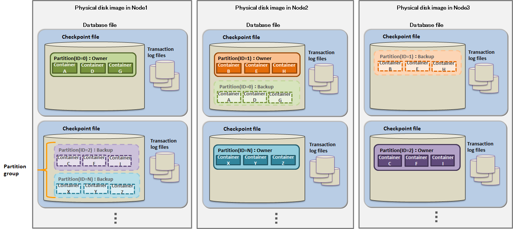
6.2 Data access function
To access GridDB data, there is a need to develop an application using NoSQL I/F or NewSQL I/F (GridDB AE only). Data can be accessed simply by connecting to the cluster database of GridDB without having to take into account position information on where the container or table is located in the cluster database. The application system does not need to consider which node constituting the cluster the container is placed in.
In the GridDB API, when connecting to a cluster database initially, placement hint information of the container is retained (cached) on the client end together with the node information (partition).
Communication overheads are kept to a minimum as the node maintaining the container is connected and processed directly without having to access the cluster to search for nodes that have been placed every time the container used by the application is switched.
Although the container placement changes dynamically due to the rebalancing process in GridDB, the position of the container is transmitted as the client cache is updated regularly. For example, even when there is a node mishit during access from a client due to a failure or a discrepancy between the regular update timing and re-balancing timing, relocated information is automatically acquired to continue with the process.
6.2.1 TQL
TQL is supported as database access languages.
What is TQL?
A simplified SQL prepared for GridDB SE. The support range is limited to functions such as search, aggregation, etc., using a container as a unit. TQL is employed by using the client API (Java, C language) of GridDB SE.
The TQL is adequate for the search in the case of a small container and a small number of hits. For that case, the response is faster than SQL. The number of hits can be suppressed by the LIMIT clause of TQL.
6.2.2 Batch-processing function to multiple containers
An interface to quickly process event information that occurs occasionally is available in NoSQL I/F.
When a large volume of events is sent to the database server every time an event occurs, the load on the network increases and system throughput does not increase. Significant impact will appear especially when the communication line bandwidth is narrow. Multi-processing is available in NoSQL I/F to process multiple row registrations for multiple containers and multiple inquiries (TQL) to multiple containers with a single request. The overall throughput of the system rises as the database server is not accessed frequently.
An example is given below.
Multi-put
A container is prepared for each sensor name as a process to register event information from multiple sensors in the database. The sensor name and row array of the timeseries event of the sensor are created and a list (map) summarizing the data for multiple sensors is created. This list data is registered in the GridDB database each time the API is invoked.
Multi-put API optimizes the communication process by combining requests of data registration into multiple containers to a node in GridDB, which is formed by multiple clusters. In addition, multi-registrations are processed quickly without performing MVCC when executing a transaction.
In a multi-put processing, transactions are committed automatically. Data is confirmed on a single case basis.
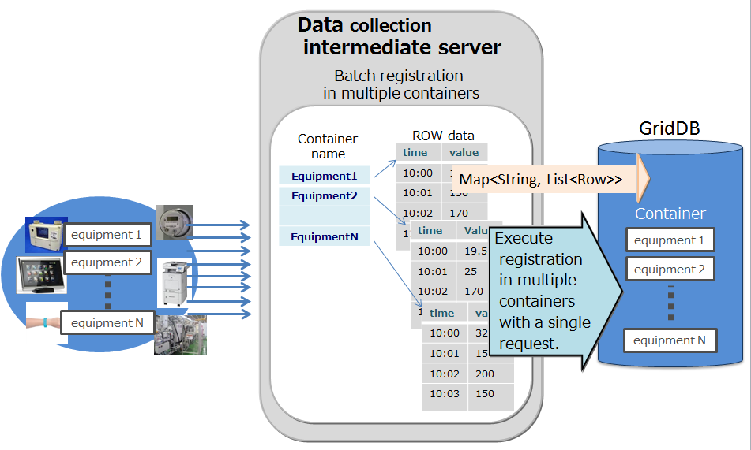
Multi-query (fetchAll)
- Instead of executing multiple queries to a container, these can be executed in a single query by aggregating event information of the sensor. For example, this is most suitable for acquiring aggregate results such as the daily maximum, minimum and average values of data acquired from a sensor, or data of a row set having the maximum or minimum value, or data of a row set meeting the specified condition.

Multi-get
Instead of executing multiple queries to a sensor, these can be executed in a single query by consolidating event information of the sensor. For example, this is most suitable for acquiring aggregate results such as the daily maximum, minimum and average values of data acquired from a sensor, or data of a row set having the maximum or minimum value, or data of a row set meeting the specified condition.
In a RowKeyPredicate object, the acquisition condition is set in either one of the 2 formats below.
- Specify the acquisition range
- Specified individual value
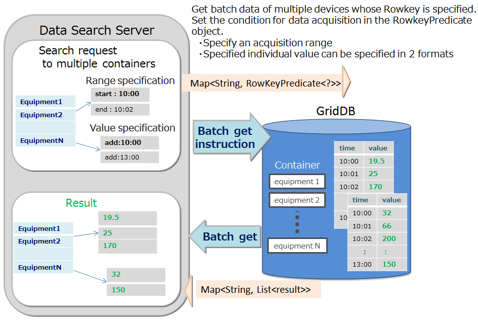
6.3 Index function
A condition-based search can be processed quickly by creating an index for the columns of a container (table).
There are 3 types of index - hash index (HASH), tree index (TREE) and space index (SPATIAL). A hash index is used in an equivalent-value search when searching with a query in a container. Besides equivalent-value search, a tree index is used in comparisons including the range (bigger/same, smaller/same etc.).
The index that can be set differs depending on the container (table) type and column data type.
- HASH INDEX
- An equivalent value search can be conducted quickly but this is not suitable for searches that read the rows sequentially.
- Columns of the following data type can be set in a collection. Cannot be set in a timeseries container, a table, and a timeseries table.
- STRING
- BOOL
- BYTE
- SHORT
- INTEGER
- LONG
- FLOAT
- DOUBLE
- TIMESTAMP
- TREE INDEX
- Besides equivalent-value search, a tree index is used in comparisons including the range (bigger/same, smaller/same etc.).
- This can be set for columns of the following data type in any type of container (table), except for columns corresponding to a rowkey in a timeseries container (timeseries table).
- STRING
- BOOL
- BYTE
- SHORT
- INTEGER
- LONG
- FLOAT
- DOUBLE
- TIMESTAMP
- Only a tree index allows an index with multiple columns, which is called a composite index. A composite index can be set up to 16 columns, where the same column cannot be specified more than once.
- SPATIAL INDEX
- Can be set for only GEOMETRY columns in a collection. This is specified when conducting a spatial search at a high speed.
Although there are no restrictions on the no. of indices that can be created in a container, creation of an index needs to be carefully designed. An index is updated when the rows of a configured container are inserted, updated or deleted. Therefore, when multiple indices are created in a column of a row that is updated frequently, this will affect the performance in insertion, update or deletion operations.
An index is created in a column as shown below.
- A column that is frequently searched and sorted
- A column that is frequently used in the condition of the WHERE section of TQL
- High cardinality column (containing few duplicated values)
[Note]
- Only a tree index can be set to the column of a table (time series table).
6.4 Function specific to time series data
To manage data frequently produced from sensors, data is placed in accordance with the data placement algorithm (TDPA: Time Series Data Placement Algorithm), which allows the best use of the memory. In a timeseries container (timeseries table), memory is allocated while classifying internal data by its periodicity. When hint information is given in an affinity function, the placement efficiency rises further. Expired data in a timeseries container is released at almost zero cost while being expelled to a disk where necessary.
A timeseries container (timeseries table) has a TIMESTAMP ROWKEY (PRIMARY KEY).
6.4.1 Compression function
In timeseries container (timeseries table), data can be compressed and held. Data compression can improve memory usage efficiency. Compression options can be specified when creating a timeseries container (timeseries table).
However, the following row operations cannot be performed on a timeseries container (timeseries table) for which compression options are specified.
- Updating a specified row.
- Deleting a specified row.
- Inserting a new row when there is a row at a later time than the specified time.
The following compression types are supported:
- HI: thinning out method with error value
- NO: no compression.
- SS: thinning out method without error value
The explanation of each option is as follows.
6.4.1.1 Thinning out method with error value (HI).
When the previous and the following registered data lies in the same slope, the current data, which is represented by a row is omitted. The condition of the slope can be specified by the user.
The row data is omitted only when the specified column satisfies the condition and the values of the other columns are the same as the previous data. The condition is specified by the error width (Width).
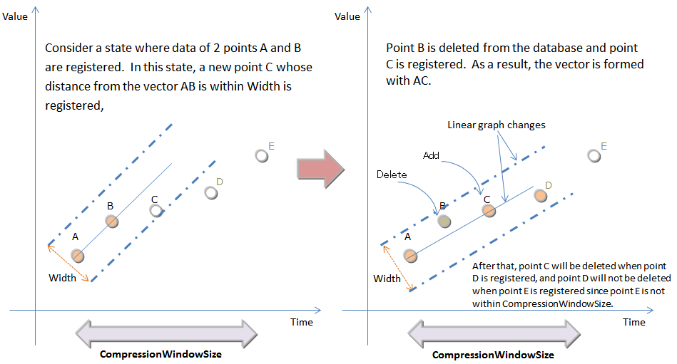
Compression can be enabled to the following data types:
- LONG
- INTEGER
- SHORT
- BYTE
- FLOAT
- DOUBLE
Since lossy compression is used, data omitted by the compression cannot be restored to its original value.
Omitted data will be restored without error value at the process of interpolate and sample processing.
6.4.1.2 Thinning out method without error value (SS)
With SS type, the row with the same data as the row registered just before and immediately after will be omitted. Omitted data will be restored without error value at the process of interpolate and sample processing.
6.4.2 Operation function of TQL
6.4.2.1 Aggregate operations
In a timeseries container (timeseries table), the calculation is performed with the data weighted at the time interval of the sampled data. In other words, if the time interval is long, the calculation is carried out assuming the value is continued for an extended time.
The functions of the aggregate operation are as follows:
TIME_AVG
- TIME_AVG Returns the average weighted by a time-type key of values in the specified column.
- The weighted average is calculated by dividing the sum of products of sample values and their respective weighted values by the sum of weighted values. The method for calculating a weighted value is as shown above.
- The details of the calculation method are shown in the figure:
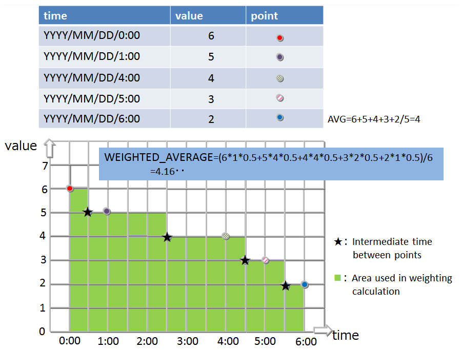
6.4.2.2 Selection/interpolation operation
Time data may deviate slightly from the expected time due to the timing of the collection and the contents of the data to be collected. Therefore when conducting a search using time data as a key, a function that allows data around the specified time to be acquired is also required.
The functions for searching the timeseries container (timeseries table) and acquiring the specified row are as follows:
TIME_NEXT(*, timestamp)
Selects a time-series row whose timestamp is identical with or just after the specified timestamp.
TIME_NEXT_ONLY(*, timestamp)
Select a time-series row whose timestamp is just after the specified timestamp.
TIME_PREV(*, timestamp)
Selects a time-series row whose timestamp is identical with or just before the specified timestamp.
TIME_PREV_ONLY(*, timestamp)
Selects a time-series row whose timestamp is just before the specified timestamp.
In addition, the functions for interpolating the values of the columns are as follows:
TIME_INTERPOLATED(column, timestamp)
Returns a specified column value of the time-series row whose timestamp is identical with the specified timestamp, or a value obtained by linearly interpolating specified column values of adjacent rows whose timestamps are just before and after the specified timestamp, respectively.
TIME_SAMPLING(*|column, timestamp_start, timestamp_end, interval, DAY|HOUR|MINUTE|SECOND|MILLISECOND)
Takes a sampling of Rows in a specific range from a given start time to a given end time.
Each sampling time point is defined by adding a sampling interval multiplied by a non-negative integer to the start time, excluding the time points later than the end time.
If there is a Row whose timestamp is identical with each sampling time point, the values of the Row are used. Otherwise, interpolated values are used.
6.4.3 Expiry release function
An expiry release is a function to delete expired row data from GridDB physically. The data becomes unavailable by removing from a target for a search or a delete before deleting. Deleting old unused data results to keep database size results in prevention of performance degradation caused by bloat of database size.
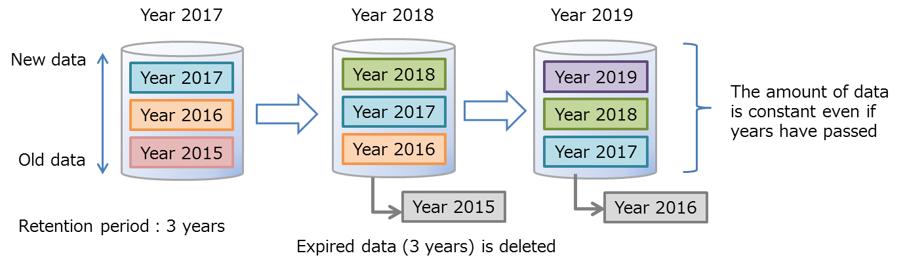
The retention period is set in container units. The row which is outside the retention period is called "expired data." The APIs become unable to operate expired data because it becomes unavailable. Therefore, applications can not access the row. Expired data will be the target for being deleted physically from GridDB after a certain period. The target is called "cold data." It is possible to delete it automatically from GridDB at the time and after saving to a external file.
6.4.3.1 Expiry release types
Row expiry release
- It can be set for a time series container.
- Setting items consist of a retention period, a retention period unit, and a division count.
- The retention period unit can be set in day/hour/minute/sec/millisecond units. The year unit and month unit cannot be specified.
- The expiration date of rows is calculated by adding row key stored date and time (retention period start date) to the retention period. It is calculated for every row.
- The unit for becoming cold data is the rows in the period (retention period/division count). For example, if the retention period is 720 days and the division count is 36, the rows in 20 (720/36) days become cold data. Physical data delete for the rows in 20 days is executed all at once.
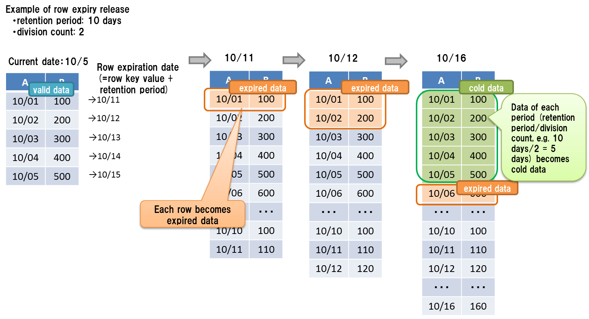
[Note]
Set for expiry release on the container creation. They cannot be changed after creation.
The current time used for judging expiration depends on the environment of each node of GridDB. Therefore, because of the network latency or time difference of the execution environments, you may not be able to access the rows in a GridDB node whose environment time is ahead of that of the client you use; on the contrary, you may be able to access the rows if the client you use is ahead of the time of GridDB. You had better set the period a larger value than you need to avoid unintentional loss of rows.
The expired rows are separated from the object of search and updating, being treated as not to exist in the GridDB. Operations to the expired row do not cause errors.
- For example, when you register a row with a timestamp of 31 days ago to the container with the expiration of 30 days, registration processing does not cause an error, while the row is not saved in the container.
When you set up expiry release, be sure to synchronize the environment time of all the nodes of a cluster. If the time is different among the nodes, the expired data may not be released at the same time among the nodes.
The period that expired data becomes cold data depends on the setting of the retention period in the expiry release.
Retention period Max period that expired data becomes cold data -3 days about 1.2 hours 3 days-12 days about 5 hours 12 days-48 days about 19 hours 48 days-192 days about 3 days 192 days-768 days about 13 days 768 days- about 38 days
6.6 Transaction function
GridDB supports transaction processing on a container basis and ACID characteristics which are generally known as transaction characteristics. The supporting functions in a transaction process are explained in detail below.
6.6.1 Starting and ending a transaction
When a row search or update etc. is carried out on a container, a new transaction is started and this transaction ends when the update results of the data are committed or aborted.
[Note]
- A commit is a process to confirm transaction information under processing to perpetuate the data.
- In GridDB, updated data of a transaction is stored as a transaction log by a commit process, and the lock that had been maintained will be released.
- An abort is a process to rollback (delete) all transaction data under processing.
- In GridDB, all data under processing are discarded and retained locks will also be released.
The initial action of a transaction is set in autocommit.
In autocommit, a new transaction is started every time a container is updated (data addition, deletion or revision) by the application, and this is automatically committed at the end of the operation. A transaction can be committed or aborted at the requested timing by the application by turning off autocommit.
A transaction recycle may terminate in an error due to a timeout in addition to being completed through a commit or abort. If a transaction terminates in an error due to a timeout, the transaction is aborted. The transaction timeout is the elapsed time from the start of the transaction. Although the initial value of the transaction timeout time is set in the definition file (gs_node.json), it can also be specified as a parameter when connecting to GridDB on an application basis.
6.6.2 Transaction consistency level
There are 2 types of transaction consistency levels, immediate consistency and eventual consistency. This can also be specified as a parameter when connecting to GridDB for each application. The default setting is immediate consistency.
immediate consistency
- Container update results from other clients are reflected immediately at the end of the transaction concerned. As a result, the latest details can be referenced all the time.
eventual consistency
- Container update results from other clients may not be reflected immediately at the end of the transaction concerned. As a result, there is a possibility that old details may be referred to.
Immediate consistency is valid in update operations and read operations. Eventual consistency is valid in read operations only. For applications which do not require the latest results to be read all the time, the reading performance improves when eventual consistency is specified.
6.6.3 Transaction isolation level
Conformity of the database contents need to be maintained all the time. When executing multiple transaction simultaneously, the following events will generally surface as issues.
Dirty read
An event which involves uncommitted data written by a dirty read transaction being read by another transaction.
Non-repeatable read
An event which involves data read previously by a non-repeatable read transaction becoming unreadable. Even if you try to read the data read previously by a transaction again, the previous data can no longer be read as the data has already been updated and committed by another transaction (the new data after the update will be read instead).
Phantom read
An event in which the inquiry results obtained previously by a phantom read transaction can no longer be acquired. Even if you try to execute an inquiry executed previously in a transaction again in the same condition, the previous results can no longer be acquired as the data satisfying the inquiry condition has already been changed, added and committed by another transaction (new data after the update will be acquired instead).
In GridDB, "READ_COMMITTED" is supported as a transaction isolation level. In READ_COMMITTED, the latest data confirmed data will always be read.
When executing a transaction, this needs to be taken into consideration so that the results are not affected by other transactions. The isolation level is an indicator from 1 to 4 that shows how isolated the executed transaction is from other transactions (the extent that consistency can be maintained).
The 4 isolation levels and the corresponding possibility of an event raised as an issue occurring during simultaneous execution are as follows.
| Isolation level | Dirty read | Non-repeatable read | Phantom read |
|---|---|---|---|
| READ_UNCOMMITTED | Possibility of occurrence | Possibility of occurrence | Possibility of occurrence |
| READ_COMMITTED | Safe | Possibility of occurrence | Possibility of occurrence |
| REPEATABLE_READ | Safe | Safe | Possibility of occurrence |
| SERIALIZABLE | Safe | Safe | Safe |
In READ_COMMITED, if data read previously is read again, data that is different from the previous data may be acquired, and if an inquiry is executed again, different results may be acquired even if you execute the inquiry with the same search condition. This is because the data has already been updated and committed by another transaction after the previous read.
In GridDB, data that is being updated by MVCC is isolated.
6.6.4 MVCC
In order to realize READ_COMMITTED, GridDB has adopted "MVCC (Multi-Version Concurrency Control)".
MVCC is a processing method that refers to the data prior to being updated instead of the latest data that is being updated by another transaction when a transaction sends an inquiry to the database. System throughput improves as the transaction can be executed concurrently by referring to the data prior to the update.
When the transaction process under execution is committed, other transactions can also refer to the latest data.
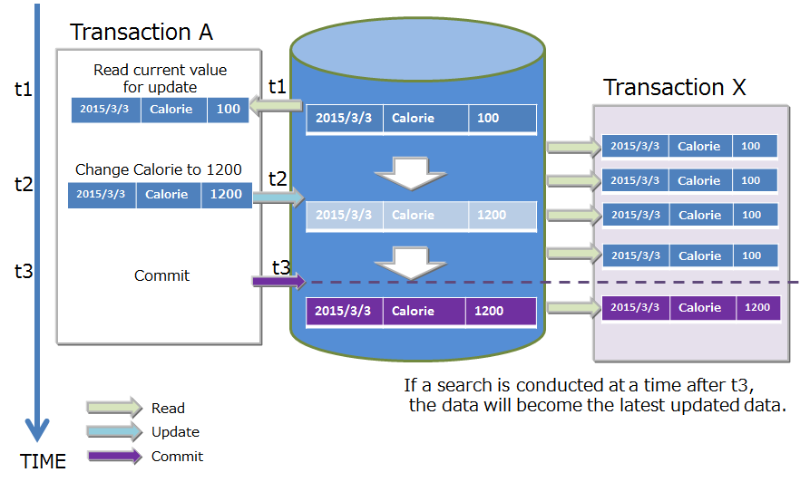
6.6.5 Lock
There is a data lock mechanism to maintain the consistency when there are competing container update requests from multiple transactions.
The lock granularity differs depending on the type of container. In addition, the lock range changes depending on the type of operation in the database.
6.6.5.1 Lock granularity
The lock granularity for each container type is as follows.
- Collection: Lock by ROW unit.
- Timeseries container: Locked by ROW collection
- In a ROW collection, multiple rows are placed in a timeseries container by dividing a block into several data processing units. This data processing unit is known as a row set. It is a data management unit to process a large volume of timeseries containers at a high speed even though the data granularity is coarser than the lock granularity in a collection.
These lock granularity were determined based on the use-case analysis of each container type.
- Collection data may include cases in which an existing ROW data is updated as it manages data just like a RDB table.
- A timeseries container is a data structure to hold data that is being generated with each passing moment and rarely includes cases in which the data is updated at a specific time.
6.6.5.2 Lock range by database operations
Container operations are not limited to just data registration and deletion but also include schema changes accompanying a change in data structure, index creation to improve speed of access, and other operations. The lock range depends on either operations on the entire container or operations on specific rows in a container.
Lock the entire container
- Index operations (createIndex/dropIndex)
- Deleting container
- Schema change
Lock in accordance with the lock granularity
- put/update/remove
- get(forUpdate)
In a data operation on a row, a lock following the lock granularity is ensured.
If there is competition in securing the lock, the subsequent transaction will be put in standby for securing the lock until the earlier transaction has been completed by a commit or rollback process and the lock is released.
A standby for securing a lock can also be cancelled by a timeout besides completing the execution of the transaction.
6.6.6 Data perpetuation
Data registered or updated in a container or table is perpetuated in the disk or SSD, and protected from data loss when a node failure occurs. There are 2 types of transaction log process, one to synchronize data in a data update and write the updated data sequentially in a transaction log file, and the other is a checkpoint process to store updated data in the memory regularly in the database file on a block basis.
To write to a transaction log, either one of the following settings can be made in the node definition file.
- 0: SYNC
- An integer value of 1 or higher: DELAYED_SYNC
In the "SYNC" mode, log writing is carried out synchronously every time an update transaction is committed or aborted. In the "DELAYED_SYNC" mode, log writing during an update is carried out at a specified delay of several seconds regardless of the update timing. Default value is "1 (DELAYED_SYNC 1 sec)".
When "SYNC" is specified, although the possibility of losing the latest update details when a node failure occurs is lower, the performance is affected in systems that are updated frequently.
On the other hand, if "DELAYED_SYNC" is specified, although the update performance improves, any update details that have not been written in the disk when a node failure occurs will be lost.
If there are 2 or more replicas in a raster configuration, the possibility of losing the latest update details when a node failure occurs is lower even if the mode is set to "DELAYED_SYNC" as the other nodes contain replicas. Consider setting the mode to "DELAYED_SYNC" as well if the update frequency is high and performance is required.
In a checkpoint, the update block is updated in the database file. A checkpoint process operates at the cycle set on a node basis. A checkpoint cycle is set by the parameters in the node definition file. Initial value is 60 sec (1 minute).
By raising the checkpoint execution cycle figure, data perpetuation can be set to be carried out in a time band when there is relatively more time to do so e.g. by perpetuating data to a disk at night and so on. On the other hand, when the cycle is lengthened, the disadvantage is that the number of transaction log files that have to be rolled forward when a node is restarted outside the system process increases, thereby increasing the recovery time.
The data updated at a checkpoint is collected and maintained in a memory different from the block in which the data was wrote at the checkpoint. Set up concurrent execution of checkpoints for faster checkpoint processing. When the concurrent execution is set up, up to as many as the number of concurrent execution of a transaction, checkpoints are processed concurrently.
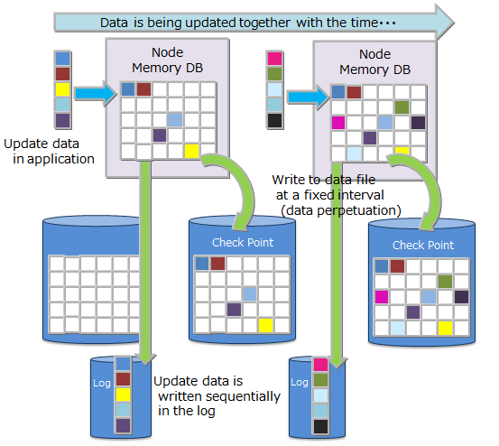
6.6.7 Timeout process
6.6.7.1 NoSQL I/F timeout process
In the NoSQL I/F, 2 types of timeout could be notified to the application developer, Transaction timeout and Failover timeout. The former is related to the processing time limit of a transaction, and the latter is related to the retry time of a recovery process when a failure occurs.
TransactionTimeout
The timer is started when access to the container subject to the process begins, and a timeout occurs when the specified time is exceeded.
Transaction timeout is configured to delete lock, and memory from a long-duration update lock (application searches for data in the update mode, and does not delete when the lock is maintained) or a transaction that maintains a large amount of results (application does not delete the data when the lock is maintained). Application process is aborted when transaction timeout is triggered.
A transaction timeout time can be specified in the application with a parameter during cluster connection. The upper limit of this can be specified in the node definition file. The default value of upper limit is 300 seconds. To monitor transactions that take a long time to process, enable the timeout setting and set a maximum time in accordance with the system requirements.
FailoverTimeout
Timeout time during an error retry when a client connected to a node constituting a cluster which failed connects to a replacement node. If a new connection point is discovered in the retry process, the client application will not be notified of the error. Failover timeout is also used in timeout during initial connection.
A failover timeout time can be specified in the application by a parameter during cluster connection. Set the timeout time to meet the system requirements.
Both the transaction timeout and failover timeout can be set when connecting to a cluster using a GridDB object in the Java API or C API.
6.7 Replication function
Data replicas are created on a partition basis in accordance with the number of replications set by the user among multiple nodes constituting a cluster.
A process can be continued non-stop even when a node failure occurs by maintaining replicas of the data among scattered nodes. In the client API, when a node failure is detected, the client automatically switches access to another node where the replica is maintained.
The default number of replication is 2, allowing data to be replicated twice when operating in a cluster configuration with multiple nodes.
When there is an update in a container, the owner node (the node having the master replica) among the replicated partitions is updated.
There are 2 ways of subsequently reflecting the updated details from the owner node in the backup node.
Asynchronous replication
Replication is carried out without synchronizing with the timing of the asynchronous replication update process. Update performance is better for quasi-synchronous replication but the availability is worse.
Quasi-synchronous replication
Although replication is carried out synchronously at the quasi-synchronous replication update process timing, no appointment is made at the end of the replication. Availability is excellent but performance is inferior.
If performance is more important than availability, set the mode to asynchronous replication and if availability is more important, set it to quasi-synchronous replication.
[Note]
- The number of replications is set in the cluster definition file (gs_cluster.json) /cluster/replicationNum. Synchronous settings of the replication are set in the cluster definition file (gs_cluster.json) /transaction/replicationMode.
6.8 Affinity function
An affinity is a function to connect related data. There are 2 types of affinity function in GridDB, data affinity and node affinity.
6.8.1 Data affinity function
A data affinity is a function to raise the memory hit rate by arranging highly correlated data in the same block and localizing data access. By raising the memory hit ratio, the no. of memory mishits during data access can be reduced and the throughput can be improved. By using data affinity, even machines with a small memory can be operated effectively.
The data affinity settings provide hint information as container properties when creating a container (table). The characters that can be specified for the hint information are restricted by naming rules that are similar to those for the container (table) name. Data with the same hint information is placed in the same block as much as possible.
Data affinity hints are set separately by the data update frequency and reference frequency. For example, consider the data structure when system data is registered, referenced or updated by the following operating method in a system that samples and refers to the data on a daily, monthly or annual basis in a monitoring system.
- Data in minutes is sent from the monitoring device and saved in the container created on a monitoring device basis.
- Since data reports are created daily, one day's worth of data is aggregated from the data in minutes and saved in the daily container
- Since data reports are created monthly, daily container (table) data is aggregated and saved in the monthly container
- Since data reports are created annually, monthly container (table) data is aggregated and saved in the annual container
- The current space used (in minutes and days) is constantly updated and displayed in the display panel.
In GridDB, instead of occupying a block in a container unit, data close to the time is placed in the block. Therefore, refer to the daily container (table) in 2., perform monthly aggregation and use the aggregation time as a ROWKEY (PRIMARY KEY). The data in 3. and the data in minutes in 1. may be saved in the same block.
When performing yearly aggregation (No.4 above) of a large amount of data, the data which need constant monitoring (No.1) may be swapped out. This is caused by reading the data, which is stored in different blocks (No.4 above), into the memory that is not large enough for all the monitoring data.
In this case, by providing hints to the container (table) according to the container (table) access frequency using a data affinity e.g. on a minute, daily or monthly basis, etc., data with a low access frequency and data with a high access frequency is separated into different blocks when the data is placed.
In this way, data can be placed to suit the usage scene of the application by the data affinity function.
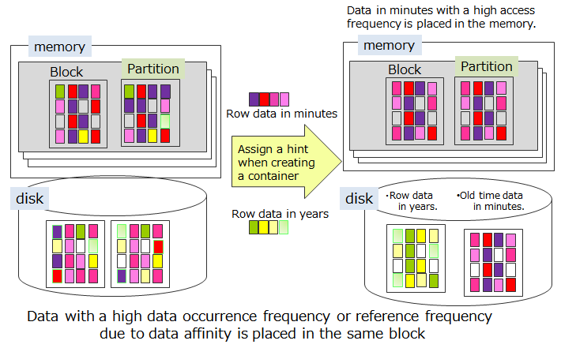
6.8.2 Node affinity function
Node affinity is a function to reduce the network load when accessing data by arranging highly correlated containers and tables in the same node.
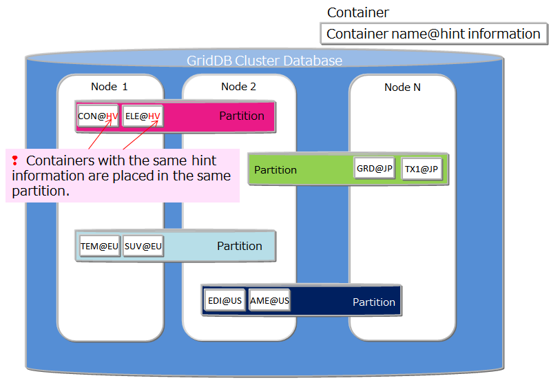
To use the node affinity function, hint information is given in the container (table) name when the container (table) is created. A container (table) with the same hint information is placed in the same partition. Specify the container name as shown below.
- Container (table) name@node affinity hint information
The naming rules for node affinity hint information are the same as the naming rules for the container (table) name.
6.9 Trigger function
A trigger function is an automatic notification function using Java Messaging Service (JMS) or REST, when an operation (add/update or delete) is carried out on the row data of a container. Event notifications can be received without the need to poll and monitor database updates in the application system.
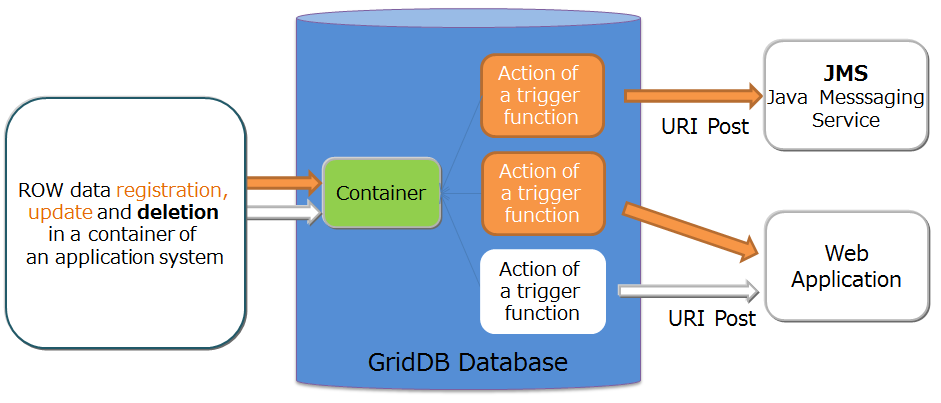
Notification method
- There are 2 ways of notifying the application system.
- Java Messaging Service(JMS)
- REST
- There are 2 ways of notifying the application system.
When the operating target is a single node
- The following three operations are available: setting a trigger, unsetting the trigger, and acquiring the settings of the trigger.
Timing of notice
- Notify when a row is created, updated, or deleted.
- Notify before a replication is completed. When not in automatic commitment mode, notify while un-committed.
Contents of notice
- Notify a container name and the type of operation: creating, updating, or deletion a row.
- When a column is specified to be noticed, the value of the column which includes the operated row is also in the notice.
Processing when an error occurs
- When an error occurs at the time of a notice, error information is recorded in an event log. The notice is not sent again after recovering from the failure.
Others
- When more than one rows are created and/or updated, a notice is issued for each row. For Java API, this processing is equivalent to the call of Container#put (java.util.Collection) or GridStore#multiPut (Map).
- When a schema is changed in a container with a trigger setting, the setting will be effective in the changed container. The column which is not in the changed schema will be automatically deleted from the column name to be noticed.
- Both JMS and REST notice can be set to a container, but should be set under different trigger names.
[Note]
- Caution about the number of triggers and updating performance
- Updating performance decreases as the increase in the number of containers with an active trigger and the number of active triggers. Set only the minimum necessary triggers.
- Caution about the processing performance of the destination server of the notice
- When the throughput of the destination server is extremely lower than that of the update process of GridDB, trigger process may fail and an error message may be recorded in an event log. When you update frequently the container with a trigger, consider the performance of the destination server.
6.10 Change the definition of a container (table)
It is possible to change the definition such as addition of columns after creating a container.
6.10.1 Add column
Add a new column to a container.
NoSQL API
Add a column with GridStore#putContainer.
Get container information "ContainerInfo" from an existing container. Execute putContainer after setting a new column to container information.
[Example program]
// Get container information ContainerInfo conInfo = store.getContainerInfo("table1"); List<ColumnInfo> newColumnList = new ArrayList<ColumnInfo>(); for ( int i = 0; i < conInfo.getColumnCount(); i++ ){ newColumnList.add(conInfo.getColumnInfo(i)); } // Set a new column to the tail newColumnList.add(new ColumnInfo("NewColumn", GSType.INTEGER)); conInfo.setColumnInfoList(newColumnList); // Add a column store.putCollection("table1", conInfo, true);
If you obtain existing rows after adding columns, the "empty value" defined in the data type of each column as a additional column value returns.

6.10.2 Delete column
Delete a column. It is only operational with NoSQL APIs.
- NoSQL API
- Delete a column with GridStore#putContainer. Get container information "ContainerInfo" from an existing container at first. Then, execute putContainer after excluding column information of a deletion target.
6.11 Database compression/release function
6.11.1 Block data compression
When GridDB writes in-memory data to the database file residing on the disk, a database with larger capacity independent to the memory size can be obtained. However, as the size increases, so does the cost of the storage. To reduce the cost, the database file (checkpoint file) can be effectively compressed using GridDB's block data compression. In this case, flash memory with a higher price per unit of capacity can be utilized much more efficiently than HDD.
Compression method
When exporting in-memory data to the database file (checkpoint file), compression is performed to each block of GridDB write unit. The vacant area of Linux's file space due to compression can be deallocated, thereby reducing disk usages.
Supported environment
Since block data compression uses the Linux function, it depends on the Linux kernel version and file system. Block data compression is supported in the following environment.
- OS: RHEL / CentOS 7.2 and later
- File system: XFS
- File system block size: 4 KB
If block data compression is enabled in other environments, the GridDB node will fail to start.
Configuration method
The compression function needs to be configured in every nodes.
- Set the following string in the node definition file (gs_node.json) /dataStore/storeCompressionMode.
- To disable compression functionality: NO_COMPRESSION (default)
- To enable compression functionality: COMPRESSION
- The settings will be applied after GridDB node is restarted.
- By restarting GridDB node, enable/disable operation of the compression function can be changed.
[Note]
- Block data compression can only be applied to checkpoint file. Transaction log files, backup file, and GridDB's in-memory data are not subject to compression.
- Due to block data compression, checkpoint file will become sparse file.
- Even if the compression function is changed effectively, data already written to the checkpoint file cannot be compressed.
6.11.2 Deallocation of unused data blocks
The deallocation of unused data blocks is the function that reduces the size (disk space) of database files by the Linux file block deallocation processing on unused block areas of database files (checkpoint files).
Use this function in the following cases.
- A large amount of data has been deleted
- There is no plan to update data and it is necessary to keep the DB for a long term.
- The disk becomes full when updating data and reducing the DB size is needed temporarily.
The processing for the deallocation of unused blocks, the support environment and the execution method are explained below.
Processing for deallocation
The unused blocks of database files (checkpoint files) are deallocated in a GridDB node at the time of starting the node. Those remain deallocated until data is updated on them.
Supported environment
The support environment is the same as the block data compression.
Execution method
Specify the deallocation option, --releaseUnusedFileBlocks, of the gs_startnode command, in the time of starting GridDB nodes.
Check the size of unused blocks and allocated blocks by the following command.
- Items shown by the gs_stat command
storeTotalUse
The total size of used blocks in the checkpoint files (bytes)
checkpointFileAllocateSize
The total size of allocated blocks in the checkpoint files (bytes)
It is desired to perform this function when the size of allocated and unused blocks is large (storeTotalUse << checkpointFileAllocateSize).
[Note]
- This function is available only for the checkpoint files. It is not available for the transaction log files and backup files.
- The checkpoint files become sparse files by performing this function.
- The disk usage can be reduced by this function, but it is possible to be a disadvantage of the performance by the fragmentations of sparse files.
- The start-up of GridDB with this function may take more time than the normal start-up.
8 Parameter
Describes the parameters to control the operations in GridDB. In the GridDB parameters, there is a node definition file to configure settings such as the setting information and usable resources etc., and a cluster definition file to configure operational settings of a cluster. Explains the meanings of the item names in the definition file and the settings and parameters in the initial state.
The unit of the setting is set as shown below.
The byte size can be specified in the following units: TB, GB, MB, KB, B, T, G, M, K, or lowercase notations of these units. Unit cannot be omitted unless otherwise stated.
Time can be specified in the following units: h, min, s, ms. Unit cannot be omitted unless otherwise stated.
8.1 Cluster definition file (gs_cluster.json)
The same setting in the cluster definition file needs to be made in all the nodes constituting the cluster. As the partitionNum and storeBlockSize parameters are important parameters to determine the database structure, they cannot be changed after GridDB is started for the first time.
The meanings of the various settings in the cluster definition file are explained below.
By adding an item name, items that are not included in the initial state can be recognized by the system. Indicate whether the parameter can be changed and the change timing in the change field.
- Disallowed: Node cannot be changed once it has been started. The database needs to be initialized if you want to change the setting.
- Restart: Parameter can be changed by restarting all the nodes constituting the cluster.
- Online: Parameters that are currently in operation online can be changed. However, the contents in the definition file need to be manual amended as the change details will not be perpetuated.
| Configuration of GridDB | Default | Meaning of parameters and limitation values | Change |
|---|---|---|---|
| /notificationAddress | 239.0.0.1 | Standard setting of a multi-cast address. This setting will become valid if a parameter with the same cluster, transaction name is omitted. If a different value is set, the address of the individual setting is valid. | Restart |
| /dataStore/partitionNum | 128 | Specify a common multiple that will allow the number of partitions to be divided and placed by the number of constituting clusters. Integer: Specify an integer that is 1 or higher and 10000 or lower. | Disallowed |
| /dataStore/storeBlockSize | 64KB | Specify the disk I/O size from 64KB,1MB,4MB,8MB,16MB,32MB. Larger block size enables more records to be stored in one block, suitable for full scans of large tables, but also increases the possibility of conflict. Select the size suitable for the system. Cannot be changed after server is started. | Disallowed |
| /cluster/clusterName | - | Specify the name for identifying a cluster. Mandatory input parameter. | Restart |
| /cluster/replicationNum | 2 | Specify the number of replicas. Partition is doubled if the number of replicas is 2. | Restart |
| /cluster/notificationAddress | 239.0.0.1 | Specify the multicast address for cluster configuration | Restart |
| /cluster/notificationPort | 20000 | Specify the multicast port for cluster configuration. Specify a value within a specifiable range as a multi-cast port no. | Restart |
| /cluster/notificationInterval | 5s | Multicast period for cluster configuration. Specify the value more than 1 second and less than 231 seconds. | Restart |
| /cluster/heartbeatInterval | 5s | Specify a check period (heart beat period) to check the node survival among clusters. Specify the value more than 1 second and less than 231 seconds. | Restart |
| /cluster/loadbalanceCheckInterval | 180s | To adjust the load balance among the nodes constituting the cluster, specify a data sampling period, as a criteria whether to implement the balancing process or not. Specify the value more than 1 second and less than 231 seconds. | Restart |
| /cluster/notificationMember | - | Specify the address list when using the fixed list method as the cluster configuration method. | Restart |
| /cluster/notificationProvider/url | - | Specify the URL of the address provider when using the provider method as the cluster configuration method. | Restart |
| /cluster/notificationProvider/updateInterval | 5s | Specify the interval to get the list from the address provider. Specify the value more than 1 second and less than 231 seconds. | Restart |
| /sync/timeoutInterval | 30s | Specify the timeout time during data synchronization among clusters. If a timeout occurs, the system load may be high, or a failure may have occurred. Specify the value more than 1 second and less than 231 seconds. | Restart |
| /transaction/notificationAddress | 239.0.0.1 | Multi-cast address that a client connects to initially. Master node is notified in the client. | Restart |
| /transaction/notificationPort | 31999 | Multi-cast port that a client connects to initially. Specify a value within a specifiable range as a multi-cast port no. | Restart |
| /transaction/notificationInterval | 5s | Multi-cast period for a master to notify its clients. Specify the value more than 1 second and less than 231 seconds. | Restart |
| /transaction/replicationMode | 0 | Specify the data synchronization (replication) method when updating the data in a transaction. Specify a string or integer, "ASYNC"or 0 (non-synchronous), "SEMISYNC"or 1 (quasi-synchronous). | Restart |
| /transaction/replicationTimeoutInterval | 10s | Specify the timeout time for communications among nodes when synchronizing data in a quasi-synchronous replication transaction. Specify the value more than 1 second and less than 231 seconds. | Restart |
8.2 Node definition file (gs_node.json)
A node definition file defines the default settings of the resources in nodes constituting a cluster. In an online operation, there are also parameters whose values can be changed online from the resource, access frequency, etc., that have been laid out. Conversely, note that there are also values (concurrency) that cannot be changed once set.
The meanings of the various settings in the node definition file are explained below.
By adding an item name, items that are not included in the initial state can be recognized by the system. Indicate whether the parameter can be changed and the change timing in the change field.
- Disallowed: Node cannot be changed once it has been started. The database needs to be initialized if you want to change the setting.
- Restart: Parameter can be changed by restarting all the nodes constituting the cluster.
- Online: Parameters that are currently in operation online can be changed. However, the contents in the definition file need to be manual amended as the change details will not be perpetuated.
Specify the directory by specifying the full path or a relative path from the GS_HOME environmental variable. For relative path, the initial directory of GS_HOME serves as a reference point. Initial configuration directory of GS_HOME is /var/lib/gridstore.
| Configuration of GridDB | Default | Meaning of parameters and limitation values | Change |
|---|---|---|---|
| /serviceAddress | - | Set the initial value of each cluster, transaction, sync service address. The initial value of each service address can be set by setting this address only without having to set the addresses of the 3 items. | Restart |
| /dataStore/dbPath | data | The deployment directory of the database file is specified by the full path or a relative path | Restart |
| /dataStore/dbFilePathList | Empty list | The list of directories where the split checkpoint files are placed when the checkpoint file is to be split. More than one can be specified (example: ["/stg01", "/stg02"]). | Restart |
| /dataStore/dbFileSplitCount | 0 (no splitting) | Number of checkpoint file splitting | Disallowed |
| /dataStore/syncTempPath | sync | Specify the path of the Data sync temporary file directory. | Restart |
| /dataStore/storeMemoryLimit | 1024MB | Upper memory limit for data management | Online |
| /dataStore/concurrency | 4 | Specify the concurrency of processing. | Disallowed |
| /dataStore/logWriteMode | 1 | Specify the log writing mode and cycle. If the log writing mode period is -1 or 0, log writing is performed at the end of the transaction. If it is 1 or more and less than 231, log writing is performed at a period specified in seconds | Restart |
| /dataStore/persistencyMode | 1(NORMAL) | In the perpetuation mode, the period that the update log file is maintained during a data update is specified. Specify either 1 (NORMAL) or 2 (RETAINING_ALL_LOGS). For "NORMAL", a transaction log file which is no longer required will be deleted by the checkpoint. For "RETAINING_ALL_LOGS", all transaction log files are retained. | Restart |
| /dataStore/storeWarmStart | false(invalid) | Specify whether to save in-memory up to the upper limit of the chunk memory during a restart. | Restart |
| /dataStore/affinityGroupSize | 4 | Number of affinity groups | Restart |
| /dataStore/storeCompressionMode | NO_COMPRESSION | Data block compression mode | Restart |
| /dataStore/autoExpire | false | Specify whether to delete the rows of a container in which an expiry release is set automatically after the rows become cold data. false: Not delete automatically (Needs to be deleted by executing the long term archive) true: Delete automatically | Online |
| /checkpoint/checkpointInterval | 60s | Checkpoint process execution period to perpetuate a data update block in the memory | Restart |
| /checkpoint/checkpointMemoryLimit | 1024MB | Upper limit of special checkpoint write memory* Pool the required memory space up to the upper limit when there is a update transaction in the checkpoint. | Online |
| /checkpoint/useParallelMode | false(invalid) | Specify whether to execute the checkpoint concurrently. *The no. of concurrent threads is the same as the concurrency. | Restart |
| /checkpoint/checkpointCopyInterval | 100ms | Output process interval when outputting a block with added or updated data to a disk in a checkpoint process. | Restart |
| /cluster/serviceAddress | Follow the "/serviceAddress" | Standby address for cluster configuration | Restart |
| /cluster/servicePort | 10010 | Standby port for cluster configuration | Restart |
| /cluster/notificationInterfaceAddress | "" | Specify the address of the interface which sends multicasting packets. | Restart |
| /sync/serviceAddress | Follow the "/serviceAddress" | Reception address for data synchronization among the clusters | Restart |
| /sync/servicePort | 10020 | Standby port for data synchronization | Restart |
| /system/serviceAddress | Follow the "/serviceAddress" | Standby address for operation commands | Restart |
| /system/servicePort | 10040 | Standby port for operation commands | Restart |
| /system/eventLogPath | log | Event log file deployment directory path | Restart |
| /transaction/serviceAddress | Follow the "/serviceAddress" | Standby address for transaction processing for client communication, used also for cluster internal communication when /transaction/localserviceAddress is not specified. | Restart |
| /transaction/localServiceAddress | Follow the "/serviceAddress" | Standby address for transaction processing for cluster internal communication | Restart |
| /transaction/servicePort | 10001 | Standby port for transaction process | Restart |
| /transaction/connectionLimit | 5000 | Upper limit of the no. of transaction process connections | Restart |
| /transaction/transactionTimeoutLimit | 300s | Transaction timeout upper limit | Restart |
| /transaction/workMemoryLimit | 128MB | Maximum memory size for data reference (get, TQL) in transaction processing (for each concurrent processing) | Online |
| /transaction/notificationInterfaceAddress | "" | Specify the address of the interface which sends multicasting packets. | Restart |
| /trace/fileCount | 30 | Upper file count limit for event log files. | Restart |
9 System limiting values
9.1 Limitations on numerical value
| Block size | 64KB | 1MB - 32MB |
|---|---|---|
| STRING/GEOMETRY data size | 31KB | 128KB |
| BLOB data size | 1GB - 1Byte | 1GB - 1Byte |
| Array length | 4000 | 65000 |
| No. of columns | 1024 | Approx. 7K - 32000 (*1) |
| No. of indexes (Per container) | 1024 | 16000 |
| No. of columns subject to linear complementary compression | 100 | 100 |
| URL of trigger | 4KB | 4KB |
| Number of affinity groups | 10000 | 10000 |
| No. of divisions in a timeseries container with a cancellation deadline | 160 | 160 |
| Size of communication buffer managed by a GridDB node | Approx. 2GB | Approx. 2GB |
| Block size | 64KB | 1MB | 4MB | 8MB | 16MB | 32MB |
|---|---|---|---|---|---|---|
| Partition size | Approx. 4TB | Approx. 64TB | Approx. 256TB | Approx. 512TB | Approx. 1PB | Approx. 2PB |
- STRING, URL of trigger
- Limiting value is equivalent to UTF-8 encode
- Spatial-type
- Limiting value is equivalent to the internal storage format
- (*1) The number of columns
- There is a restriction on the upper limit of the number of columns. The total size of a fixed length column (BOOL, INTEGER, FLOAT, DOUBLE, TIMESTAMP type) must be less than or equal to 59 KB. The upper limit of the number of columns is 32000 if the type is not a fixed length column.
- Example) If a container consists of LONG type columns: the upper limit of the number of columns is 7552 ( The total size of a fixed length column 8B * 7552 = 59KB )
- Example) If a container consists of BYTE type columns: the upper limit of the number of columns is 32000 ( The total size of a fixed length column 1B * 32000 = Approx. 30KB -> Up to 32000 columns can be created because the size restriction on a fixed length column does not apply to it )
- Example) If a container consists of STRING type columns: the upper limit of the number of columns is 32000 ( Up to 32000 columns can be created because the size restriction on a fixed length column does not apply to it )
- There is a restriction on the upper limit of the number of columns. The total size of a fixed length column (BOOL, INTEGER, FLOAT, DOUBLE, TIMESTAMP type) must be less than or equal to 59 KB. The upper limit of the number of columns is 32000 if the type is not a fixed length column.
9.2 Limitations on naming
| Field | Allowed characters | Maximum length |
|---|---|---|
| User | The head of name is "gs#" and the following characters are either alphanumeric or '_' | 64 characters |
| <Password> | Composed of an arbitrary number of characters using the unicode code point |
64 bytes (by UTF-8 encoding) |
| cluster name | Alphanumeric, '_', '-', '.', '/', and '=' | 64 characters |
| Container name Table name |
Alphanumeric, '_', '-', '.', '/', and '=' (and '@' only for specifying a node affinity) |
16384 characters (for 64KB block) 131072 characters (for 1MB - 32MB block) |
| Column name | Alphanumeric, '_', '-', '.', '/', and '=' | 256 characters |
| Index name | Alphanumeric, '_', '-', '.', '/', and '=' | 16384 characters (for 64KB block) 131072 characters (for 1MB - 32MB block) |
| Trigger name | Alphanumeric, '_', '-', '.', '/', and '=' | 256 characters |
| Data Affinity | Alphanumeric, '_', '-', '.', '/', and '=' | 8 characters |
Case sensitivity
Cluster names, trigger names and passwords are case-sensitive. So the names of the following example are handled as different names.
Example) trigger, TRIGGER
Other names are not case-sensitive. Uppercase and lowercase characters are identified as the same.
Uppercase and lowercase characters in names at the creation are hold as data.
The names enclosed with '"' in TQL are case-sensitive. In that case, uppercase and lowercase characters are not identified as the same.
Example) Search on the container "SensorData" and the column "Column1" select "Column1" from "SensorData" Success select "COLUMN1" from "SENSORDATA" Fail (Because "SENSORDATA" container does not exist)Specifying names by TQL
In the case that the name is not enclosed with '"', it can contain only alphanumeric and '_'. To use other characters, the name is required to be enclosed with '"'.
Example) select "012column", data_15 from "container.2017-09"